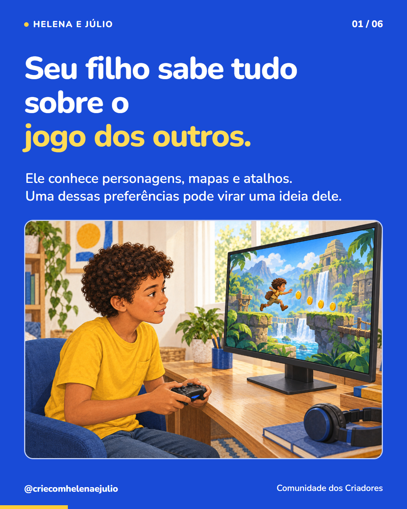
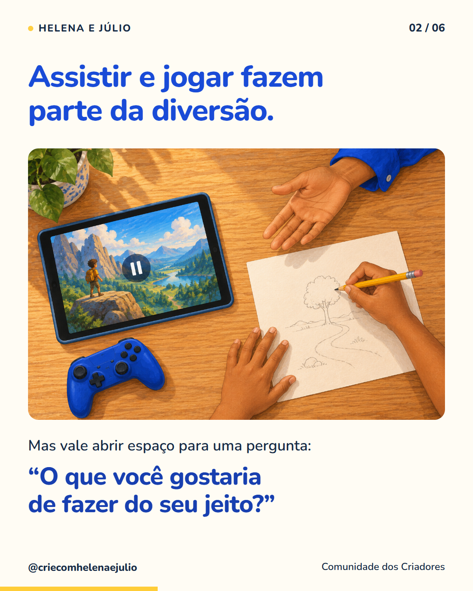
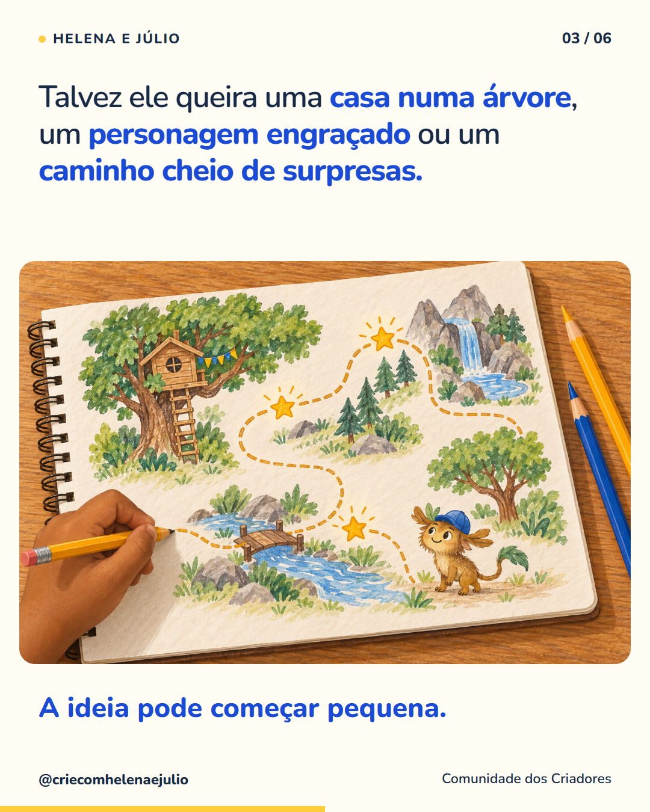
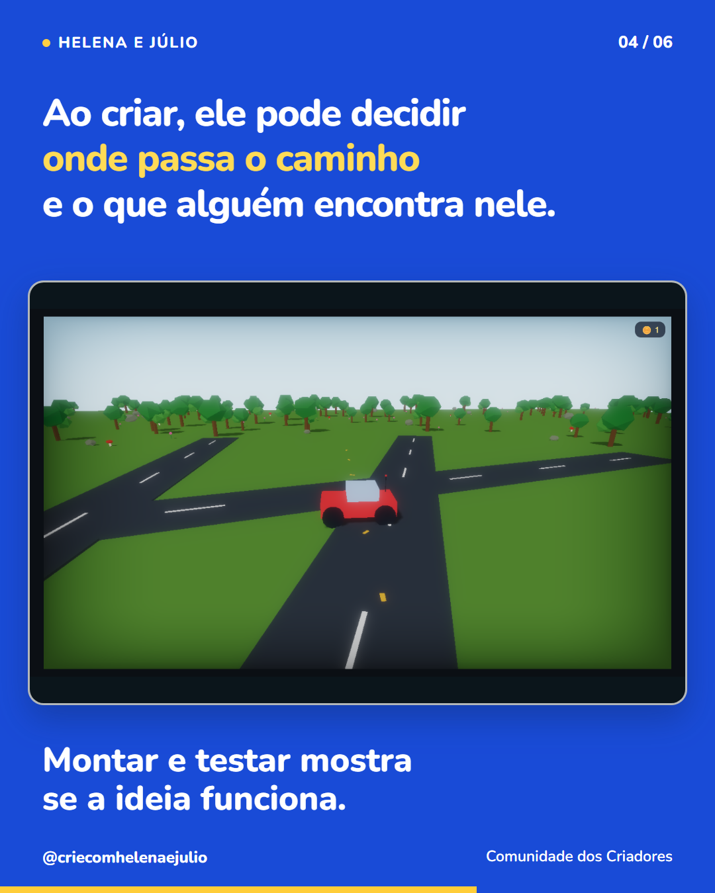
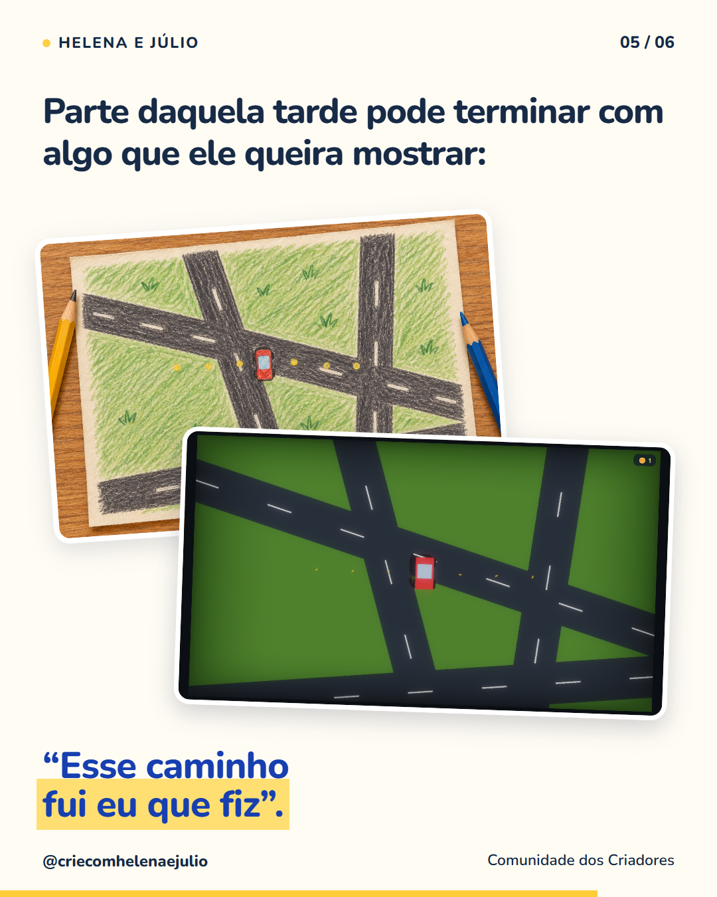
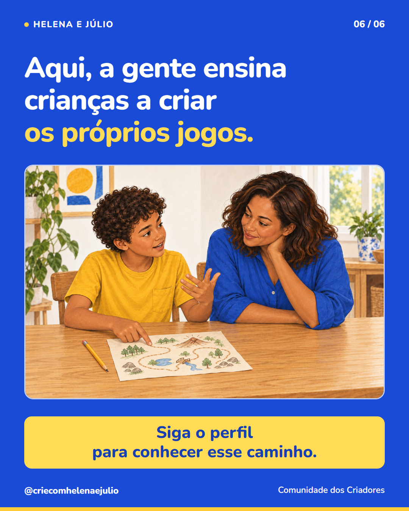

P01 · 6 slides · 1080 × 1350 · 4:5 · Legenda · Texto alternativo






Ilustrações editoriais e captura real de uma adaptação do exemplo Meu Mundo. Mídia pronta para publicação manual; nada foi publicado.